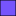

<!doctype html>
<html lang="en">
    <head>
        <meta charset="utf-8">
        <meta http-equiv="X-UA-Compatible" content="IE=edge">
        <meta name="viewport" content="initial-scale=1,user-scalable=no,maximum-scale=1,width=device-width">
        <meta name="mobile-web-app-capable" content="yes">
        <meta name="apple-mobile-web-app-capable" content="yes">
        <link rel="stylesheet" href="css/leaflet.css">
        <link rel="stylesheet" href="css/qgis2web.css">
        <link rel="stylesheet" href="css/leaflet-search.css">
        <link rel="stylesheet" href="css/Control.OSMGeocoder.css">
        <style>
        html, body, #map {
            width: 100%;
            height: 100%;
            padding: 0;
            margin: 0;
        }
        </style>
        <title></title>
    </head>
    <body>
        <div id="map">
        </div>
        <script src="js/qgis2web_expressions.js"></script>
        <script src="js/leaflet.js"></script>
        <script src="js/leaflet.rotatedMarker.js"></script>
        <script src="js/leaflet.pattern.js"></script>
        <script src="js/leaflet-hash.js"></script>
        <script src="js/Autolinker.min.js"></script>
        <script src="js/rbush.min.js"></script>
        <script src="js/labelgun.min.js"></script>
        <script src="js/labels.js"></script>
        <script src="js/Control.OSMGeocoder.js"></script>
        <script src="js/leaflet-search.js"></script>
        <script src="data/UrbanBush_0.js"></script>
        <script src="data/Sprint_1.js"></script>
        <script src="data/Forest_2.js"></script>
        <script src="data/Park_3.js"></script>
        <script src="data/Street_4.js"></script>
        <script>
        layer: L.featureGroup([UrbanBush_0,Street_4,Sprint_1,Forest_2,Park_3]);
        var highlightLayer;
        function highlightFeature(e) {
            highlightLayer = e.target;

            if (e.target.feature.geometry.type === 'LineString') {
              highlightLayer.setStyle({
                color: '#ffff00',
              });
            } else {
              highlightLayer.setStyle({
                fillColor: '#ffff00',
                fillOpacity: 1
              });
            }
            highlightLayer.openPopup();
        }
        var map = L.map('map', {
            zoomControl:true, maxZoom:28, minZoom:1
        }).fitBounds([[-33.9335643686,151.018884865],[-33.6765549105,151.350273835]]);
        var hash = new L.Hash(map);
        map.attributionControl.addAttribution('<a href="https://github.com/tomchadwin/qgis2web" target="_blank">qgis2web</a>');
        var bounds_group = new L.featureGroup([]);
        var basemap0 = L.tileLayer('http://{s}.tile.openstreetmap.org/{z}/{x}/{y}.png', {
            attribution: '&copy; <a href="http://openstreetmap.org">OpenStreetMap</a> contributors,<a href="http://creativecommons.org/licenses/by-sa/2.0/">CC-BY-SA</a>',
            maxZoom: 28
        });
        basemap0.addTo(map);
        function setBounds() {
        }
                function pop_layer(feature, layer) {
            layer.on({
                mouseout: function(e) {
                    for (i in e.target._eventParents) {
                        e.target._eventParents[i].resetStyle(e.target);
                    }
                },
                mouseover: highlightFeature,
            });
            var popupContent = '<table>\
                    <tr>\
                        <td colspan="2">' + (feature.properties['id'] !== null ? Autolinker.link(String(feature.properties['id'])) : '') + '</td>\
                    </tr>\
                    <tr>\
                        <td colspan="2">' + (feature.properties['MapName'] !== null ? Autolinker.link(String(feature.properties['MapName'])) : '') + '</td>\
                    </tr>\
                    <tr>\
                        <th scope="row">Scale</th>\
                        <td>1:' + (feature.properties['Scale'] !== null ? Autolinker.link(String(feature.properties['Scale'])) : '') + '</td>\
                    </tr>\
                    <tr>\
                        <th scope="row">Contours</th>\
                        <td>' + (feature.properties['ContourInt'] !== null ? Autolinker.link(String(feature.properties['ContourInt'])) : '') + 'm</td>\
                    </tr>\
                    <tr>\
                        <th scope="row">Last Use</th>\
                        <td>' + (feature.properties['LastUse'] !== null ? Autolinker.link(String(feature.properties['LastUse'])) : '') + '</td>\
                    </tr>\
                    <tr>\
                        <th scope="row">Creation</th>\
                        <td>' + (feature.properties['Creation'] !== null ? Autolinker.link(String(feature.properties['Creation'])) : '') + '</td>\
                    </tr>\
                    <tr>\
                        <th scope="row">First Use</th>\
                        <td>' + (feature.properties['FirstUse'] !== null ? Autolinker.link(String(feature.properties['FirstUse'])) : '') + '</td>\
                    </tr>\
                    <tr>\
                        <th scope="row">Map Type</th>\
                        <td>' + (feature.properties['MapType'] !== null ? Autolinker.link(String(feature.properties['MapType'])) : '') + '</td>\
                    </tr>\
                    <tr>\
                        <th scope="row">Terrain</th>\
                        <td>' + (feature.properties['Terrain'] !== null ? Autolinker.link(String(feature.properties['Terrain'])) : '') + '</td>\
                    </tr>\
                    <tr>\
                        <th scope="row">Spec</th>\
                        <td>' + (feature.properties['Spec'] !== null ? Autolinker.link(String(feature.properties['Spec'])) : '') + '</td>\
                    </tr>\
                    <tr>\
                        <th scope="row">Club</th>\
                        <td>' + (feature.properties['Club'] !== null ? Autolinker.link(String(feature.properties['Club'])) : '') + '</td>\
                    </tr>\
                        <th scope="row">Eventor Club Id</th>\
                        <td>' + (feature.properties['ClubId'] !== null ? Autolinker.link(String(feature.properties['ClubId'])) : '') + '</td>\
                    </tr>\
                    <tr>\
                        <th scope="row">Mapper/s</th>\
                        <td>' + (feature.properties['Mapper'] !== null ? Autolinker.link(String(feature.properties['Mapper'])) : '') + '</td>\
                    </tr>\
                    <tr>\
                        <th scope="row">Land Owner</th>\
                        <td>' + (feature.properties['LandOwner'] !== null ? Autolinker.link(String(feature.properties['LandOwner'])) : '') + '</td>\
                    </tr>\
                    <tr>\
                        <th scope="row">Last Update</th>\
                        <td>' + (feature.properties['LastUpdate'] !== null ? Autolinker.link(String(feature.properties['LastUpdate'])) : '') + '</td>\
                    </tr>\
                    <tr>\
                    <tr>\
                        <th scope="row">Area</th>\
                        <td>' + (feature.properties['Area'] !== null ? Autolinker.link(String(feature.properties['Area'])) : '') + '</td>\
                    </tr>\
                </table>';
            layer.bindPopup(popupContent, {maxWidth: 900});
        }
        
        function style_UrbanBush_0_0() {
            return {
                pane: 'pane_UrbanBush_0',
                opacity: 1,
                color: 'rgba(0,0,0,1.0)',
                dashArray: '',
                lineCap: 'butt',
                lineJoin: 'miter',
                weight: 1.0, 
                fillOpacity: 1,
                fillColor: 'rgba(135,43,61,1.0)',
            }
        }
        map.createPane('pane_UrbanBush_0');
        map.getPane('pane_UrbanBush_0').style.zIndex = 400;
        map.getPane('pane_UrbanBush_0').style['mix-blend-mode'] = 'normal';
        var layer_UrbanBush_0 = new L.geoJson(json_UrbanBush_0, {
            attribution: '<a href=""></a>',
            pane: 'pane_UrbanBush_0',
            onEachFeature: pop_UrbanBush_0,
            style: style_UrbanBush_0_0,
        });
        bounds_group.addLayer(layer_UrbanBush_0);
        map.addLayer(layer_UrbanBush_0);
        function pop_Sprint_1(feature, layer) {
            layer.on({
                mouseout: function(e) {
                    for (i in e.target._eventParents) {
                        e.target._eventParents[i].resetStyle(e.target);
                    }
                    if (typeof layer.closePopup == 'function') {
                        layer.closePopup();
                    } else {
                        layer.eachLayer(function(feature){
                            feature.closePopup()
                        });
                    }
                },
                mouseover: highlightFeature,
            });
        }

        function style_Sprint_1_0() {
            return {
                pane: 'pane_Sprint_1',
                opacity: 1,
                color: 'rgba(0,0,0,1.0)',
                dashArray: '',
                lineCap: 'butt',
                lineJoin: 'miter',
                weight: 1.0, 
                fillOpacity: 1,
                fillColor: 'rgba(166,52,56,1.0)',
            }
        }
        map.createPane('pane_Sprint_1');
        map.getPane('pane_Sprint_1').style.zIndex = 401;
        map.getPane('pane_Sprint_1').style['mix-blend-mode'] = 'normal';
        var layer_Sprint_1 = new L.geoJson(json_Sprint_1, {
            attribution: '<a href=""></a>',
            pane: 'pane_Sprint_1',
            onEachFeature: pop_Sprint_1,
            style: style_Sprint_1_0,
        });
        bounds_group.addLayer(layer_Sprint_1);
        map.addLayer(layer_Sprint_1);
        function pop_Forest_2(feature, layer) {
            layer.on({
                mouseout: function(e) {
                    for (i in e.target._eventParents) {
                        e.target._eventParents[i].resetStyle(e.target);
                    }
                    if (typeof layer.closePopup == 'function') {
                        layer.closePopup();
                    } else {
                        layer.eachLayer(function(feature){
                            feature.closePopup()
                        });
                    }
                },
                mouseover: highlightFeature,
            });
        }

        function style_Forest_2_0() {
            return {
                pane: 'pane_Forest_2',
                opacity: 1,
                color: 'rgba(0,0,0,1.0)',
                dashArray: '',
                lineCap: 'butt',
                lineJoin: 'miter',
                weight: 1.0, 
                fillOpacity: 1,
                fillColor: 'rgba(118,144,91,1.0)',
            }
        }
        map.createPane('pane_Forest_2');
        map.getPane('pane_Forest_2').style.zIndex = 402;
        map.getPane('pane_Forest_2').style['mix-blend-mode'] = 'normal';
        var layer_Forest_2 = new L.geoJson(json_Forest_2, {
            attribution: '<a href=""></a>',
            pane: 'pane_Forest_2',
            onEachFeature: pop_Forest_2,
            style: style_Forest_2_0,
        });
        bounds_group.addLayer(layer_Forest_2);
        map.addLayer(layer_Forest_2);
        function pop_Park_3(feature, layer) {
            layer.on({
                mouseout: function(e) {
                    for (i in e.target._eventParents) {
                        e.target._eventParents[i].resetStyle(e.target);
                    }
                    if (typeof layer.closePopup == 'function') {
                        layer.closePopup();
                    } else {
                        layer.eachLayer(function(feature){
                            feature.closePopup()
                        });
                    }
                },
                mouseover: highlightFeature,
            });
        }

        function style_Park_3_0() {
            return {
                pane: 'pane_Park_3',
                opacity: 1,
                color: 'rgba(0,0,0,1.0)',
                dashArray: '',
                lineCap: 'butt',
                lineJoin: 'miter',
                weight: 1.0, 
                fillOpacity: 1,
                fillColor: 'rgba(200,188,148,1.0)',
            }
        }
        map.createPane('pane_Park_3');
        map.getPane('pane_Park_3').style.zIndex = 403;
        map.getPane('pane_Park_3').style['mix-blend-mode'] = 'normal';
        var layer_Park_3 = new L.geoJson(json_Park_3, {
            attribution: '<a href=""></a>',
            pane: 'pane_Park_3',
            onEachFeature: pop_Park_3,
            style: style_Park_3_0,
        });
        bounds_group.addLayer(layer_Park_3);
        map.addLayer(layer_Park_3);
        function pop_Street_4(feature, layer) {
            layer.on({
                mouseout: function(e) {
                    for (i in e.target._eventParents) {
                        e.target._eventParents[i].resetStyle(e.target);
                    }
                    if (typeof layer.closePopup == 'function') {
                        layer.closePopup();
                    } else {
                        layer.eachLayer(function(feature){
                            feature.closePopup()
                        });
                    }
                },
                mouseover: highlightFeature,
            });
        }

        function style_Street_4_0() {
            return {
                pane: 'pane_Street_4',
                opacity: 1,
                color: 'rgba(0,0,0,1.0)',
                dashArray: '',
                lineCap: 'butt',
                lineJoin: 'miter',
                weight: 1.0, 
                fillOpacity: 1,
                fillColor: 'rgba(118,84,252,1.0)',
            }
        }
        map.createPane('pane_Street_4');
        map.getPane('pane_Street_4').style.zIndex = 404;
        map.getPane('pane_Street_4').style['mix-blend-mode'] = 'normal';
        var layer_Street_4 = new L.geoJson(json_Street_4, {
            attribution: '<a href=""></a>',
            pane: 'pane_Street_4',
            onEachFeature: pop_Street_4,
            style: style_Street_4_0,
        });
        bounds_group.addLayer(layer_Street_4);
        map.addLayer(layer_Street_4);
        var osmGeocoder = new L.Control.OSMGeocoder({
            collapsed: false,
            position: 'topright',
            text: 'Search',
        });
        osmGeocoder.addTo(map);
        var baseMaps = {};
        L.control.layers(baseMaps,{' Street': layer_Street_4,' Park': layer_Park_3,' Forest': layer_Forest_2,' Sprint': layer_Sprint_1,' Urban Bush': layer_UrbanBush_0,},{collapsed:false}).addTo(map);
        setBounds();
        map.addControl(new L.Control.Search({
            layer: layer_UrbanBush_0,
            initial: false,
            hideMarkerOnCollapse: true,
            propertyName: 'MapName'}));
        </script>
    </body>
</html>
